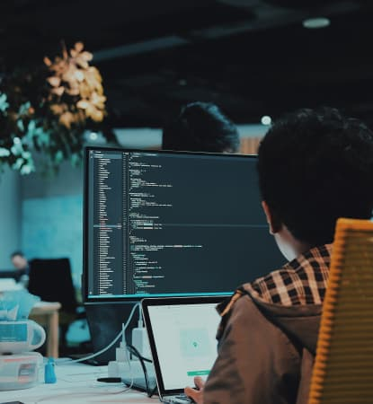

Вітаю, я Сергій Сірко frontend-розробник
Про мене
Вітаю всіх на своєму сайті! Мене звати Сергій, я з Івано-Франківська. Займаюся фронтенд-розробкою трохи більше року. До розробки займався нелюбимою справою, ходив на роботу, що не подобалася мені, не міг зрозуміти, як знайти працю за покликанням і робити те, що подобається, заробляючи собі на життя, допоки не знайшов один цікавий курс.
З того часу багато чого дізнався, навчання давалося по-різному: десь легше, десь складніше. Щоденна робота над навичками та зусилля, яких я докладав, вже за кілька місяців принесли плоди - вдалось взяти замовлення на фрілансі. З відгуками від задоволених клієнтів та прикладами моїх робіт можна ознайомитися нижче
Навички
- html
- css
- js
-
Верстка проектів
Зроблю якісну верстку вашого проєкта за наявним макетом або прикладами робіт, які вам подобаються
-
Інтеграція з WP
Інтегрую ваш проєкт з однією з популярних CMS
-
Підтримка сайта
Гарантую підтримку вашого сайта протягом 30 днів післе здачі проєкта